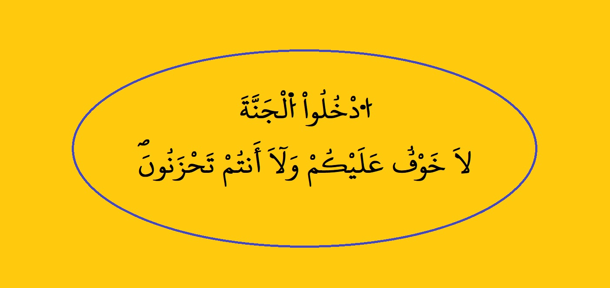

(مرتّبة حسب أقدمية الوفاة)
الحمد لله والصلاة والسلام على رسول الله، محمد بن عبد الله وعلى آله وصحبه ومن والاه، وبعد:
فإني أعترف مسبقا بأني لست خير من يكتب في هذا الفن؛ فلست من أهله أصلا، ولم يندرج ضمن ميولي واهتماماتي يوما من الأيام وما زلت لحدّ الساعة كذلك. وإنما أنا كما في أول بيتيْ العلامة الحاج احماه الله:
لكنني استجبت لمرارة الإحساس بالاندراس المتنامي لحياة السلف وانطماس معالم الظرف الزمني الذي احتضنَه بشكل يشهد واقعه اليوم على حتمية انبتات الصلة مستقبلا بين الأجيال السابقة واللاحقة في ظرف وجيز. فاعتبرت أن البِرَّ بالسلف والخلف يستوجب المبادرة إلى تلافي ما لا يزال تلافيه ممكنا من إثبات تواريخ مواليد ووفيات السلف وتحديد أماكن دفن أشخاصه؛ أما البر بالسلف، فللتذكير به قصد الترحم عليه وتحديد مدافنه تسهيلا لزيارته. وأما البر بالخلف، فَلِما يفضي إليه هذا العمل من شبه إعادة بناء الصورة الزمنية لمجتمعات الأسلاف التي عاشوا فيها. وذلك من خلال إماطة الإبهام عن بعض عناصر تلك الصورة، كالتزامن، والمعاصرات، والتقدم، والتأخر، وشبه ذلك.
ولا يخفى ما يسديه هذا الغرض من نتائج نافعة لصالح البحث العلمي الذي لا يستحيل فيه التقدم خطوة أخرى نحو مزيد من الدراسة لهذا المجتمع. غير أنها خطوة لست أنا صاحبها لافتقارها إلى أحد اثنين:
- من يمتلك شطارة المشي على الأشواك بلا تأذ ولا إيذاء
- أو من يمتلك شجاعة المجاهرة بالكذب والجراءة على الله
وما أنا بأحد هذين.
وقد حرصت على وضع هذه التوطئة لرفع كل لبس محتمل من خلال تبيان منهجيتي في جمع البيانات، وضبط أسماء الأعلام، وترتيبها، والتأريخ لها.
يتوجه هذا العمل مجتمعاً يمثل في تلاحمه وتعاضده أسرة واحدة، ويرجع تشكله بشكل تدريجي إلى بدايات القرن التاسع عشر الميلادي، الثالث عشر الهجري. وهو مجتمع التحمت جذوره بوحدة النسب الحسنِي والحسيْني، وتآلفت فروعه باشتراك القيم والأخلاق والطباع، وتعززت وحدته بتبادل الزيجات والمصاهرات والمساكنة في الحيّز الجغرافي الأوسط من موريتانيا، وعلى الخصوص الولايات الثلاث (تكانت، لبراكنَ، آدرار)، منتبذا عبودية المدينة والانتساب لها، كما نبزه العراقي في ألفيته:
وضاعت الأنساب في البلدان فنُسب الأكثر للأوطان
وحيث إن مجافاة المدينة لم يكن من طبعها الإعانة على التوثيق للأحداث والوقائع، فقد ضاعت جل تواريخ المواليد والوفيات لهذا المجتمع، ولم يبق متاحا لانتشالها من براثن الضياع غير البحث والتقصي الشديد والتخمين المستند إلى القرائن. لهذا عمدت إلى تبني منهجية تقوم على اختيار شخص أو أشخاص من كل أسرة من أسر هذا المجتمع، وإلزامهم مهمة التحري -تحقيقا أو تخمينا- فيما يتعلق بأسرهم من منظور كونهم أكثر أهلية لذلك من سواهم. وبذلك ألقيت العهدة على من هو أهل لتحملها؛ فليس لي في هذا العمل إلا التجميع والتدوين لما أتحفني به أولئك، باستثناء بعض التدقيقات التي استلزمها الموقف في بعض الأحيان؛ فإليهم أزجي خالص شكري وامتناني، راجيا لي ولهم من الله المثوبة في المجهود والسلامة في النية.
وبالنظر إلى وجود عنصر التخمين في البيانات، فقد لزم التنبيه إلى أن التواريخ المثبتة في هذا الجرد هي كشكول من التواريخ المحققة، وأغلبها في خانة الوفيات، والتواريخ المخمنة، وأغلبها في خانة المواليد. ولهذا أيضا استعنت بإشارة الاستفهام للتعبير عن وجود عنصر الغموض في التاريخ؛ مشيرا بثلاث منها إلى الفقدان الكلي للتاريخ، وباثنتين إلى هشاشة مستند التخمين، وبواحدة إلى قوته؛ وبالخلو منها إلى دقة التاريخ، وفق مصدر المعلومات.
أ - لقد حرصت على ذكر الأشخاص بأسماء شهرتهم كما هي في الحياة دون تغيير، حفاظاً على سهولة تمييز القارئ لهم. وأعرف أن البعض يطمح لإثبات ألقاب التفخيم المستحق لأجداده؛ كالعلامة، والشيخ، والولي، وشبه ذلك؛ فلهؤلاء أقول: .
أغلب من في هذا الجرد يستحق أعظم الألقاب الآنفة الذكر. لكني أسير منهج البحث العلمي الذي يمقت الإطراء والمبالغة، ويعتبرها ثغرة في الكفاءة العلمية للباحث، ونقصا في المصداقية العلمية للبحث؛ فانتبذت ما يقدح في الباحث ولا يثري رصيد المبحوث فيه.
ب - كما أني تجنبت ما أسميته –ولو بشيء من التجوز- "التعريب" و "التعجيم" والإغراق في استخدام "هاء السكت" التي انتشرت في الخط العربي هذه الأيام بلا هوادة.
- أما "التعريب" فأعني به ظاهرة العدول في الخط عن واقع منطوق الأسماء إلى أصلها العربي كما هي الحال مثلا في (سِيدِ) وكتابتها (سيدي)، وأشباهه. فإذا كان المقصود من الخط هو تصوير منطوق اللفظ بأمانة، فإن (سيدي) لا يمكن قراءتها إلا (سَيِّدِي) التي هي كلمة أخرى غير (سِيدِ) كما هو واضح.
- أما "التعجيم" فأعني به ظاهرة محاكاة اللغات اللاتينية في ضبط الخط العربي بالحروف بدل الحركات (محمدي، سيدي، أحمدو، محمدو، إسلمو...). علما بأن هذا الرسم لا يشكل بأي حال تصويرا سليما للّفظ المقصود، بدليل وجود مدٍ ذاتي في حروف العلة لا يستقيم نطقه في اللفظ المقصود. وقد نشأت هذه النزعة لأول مرة في الشرق العربي نهاية القرن التاسع عشر وبداية القرن العشرين. وبالرغم من أنه قد تم وأدها في المهد حينئذ لما اشتُم فيها من خفيِّ السعي إلى القطيعة المستقبلية بين المسلمين وبين قراءة القرآن الكريم وكتب السنة والتراث الإسلامي عندما يتغير الخط العربي عن أصله، فها هي تطل من جديد برأسها وكلكلها وتتغلغل في هذا الخط العربي بدرجة يصعب الوقوف أمامها، ما لم ينتبه لخطورة ذلك حملة الأقلام.
- أما الإغراق في استخدام "هاء السكت " فهو الآخر ظاهرة منتشرة نسي أصحابها أن "أمْنَ اللبس" شرط في استخدام هاء السكت. ونقتصر في التمثيل له على ما توارد عليه كَتَبة اليوم من رسم اسم جدنا العلامة حرمَ بن عبد الجليل رحمه الله، بصورة "حرمه ". وهي صورة "لم يؤمن فيها اللبس"، لأنها توهم غير موهوم بمجرد فتح الحرفين الأولين، وضم الأخيرين. ولا شيء يمنع من ذلك.
ولمن يمتري في بدعية هذه الظاهرة الرجوع إلى خطوط علماء الأمة والسلف من هذا المجتمع. وخلاصة الأمر أني لا أخَطّئ أحدا جرى على غير ما أرى، لكني أحتفظ لنفسي بحق التمسك بالخط العربي في نقائه خاليا من "الزوائد الدودية" الجديدة، واستمساكاً بأن الضبط في الخط العربي يكون بالحركات، لا بالحروف. وهذا ما اعتمدته في رسم أسماء الأعلام المشمولة بهذا الجرد.
ج- وبما أن المجتمع الذي يتوجهه هذا الجرد ينقسم إلى أربعة فروع رئيسة، فقد ميزت كل فرع بإشارة خاصة به لتمييز أفراده عمن سواهم. وذلك إمعانا في التعريف بالأفراد وتفاديا لكل لبس محتمل. وهكذا أشرت لأشخاص "أهل محمولْ اشريف" بعبارة (م ح)، ولأهل مولاي عمر بإشارة (م ع)، ولأهل محمذن ميلود بإشارة (م م)، ولأفراد العلويين بإشارة (ع). ووضعت أمام كل فرد في الجرد الإشارة المميزة لفرعه.
لقد حرصت على إثبات التاريخين، الهجري والميلادي؛ جمعاً بين قاعدتيْ الأصل والغالب؛ فالأصل تأريخ السلف بالتقويم الهجري، والغالب اليوم التأريخ بالتقويم الميلادي، الذي لم يعد الجيل الحالي يستفيد من التاريخ الوارد بغيره.
أما ترتيب بيانات الجرد، فقد اعتمدت فيه تواريخ الوفيات لكونها أكثر دقة وشمولا من تواريخ الميلاد. ورتبت الجرد حسب أقدمية الوفاة.
والله أسأل أن يكون هذا المجهود خالصا لوجهه الكريم، متقبلاً في ميزان جزائه. وما توفيقي إلا بالله عليه توكلت وإليه أنيب.
نواكشوط، الاثنين — 15 شعبان 1442هـ — 29 مارس 2021م
والله ولي التوفيق
تصميم البرنامج: المهندسة / مريم السيد